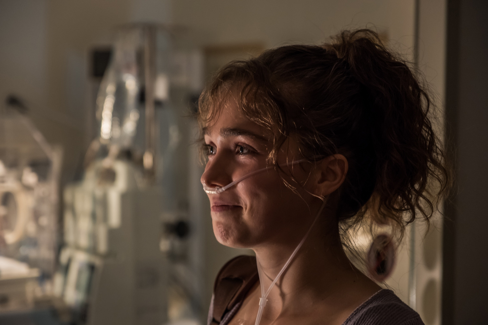
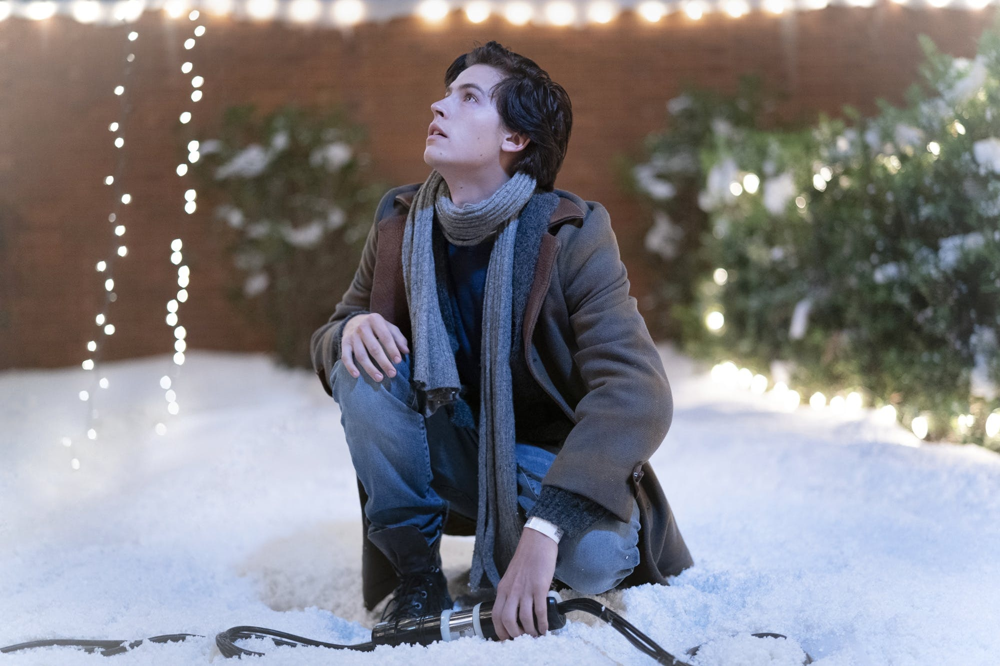
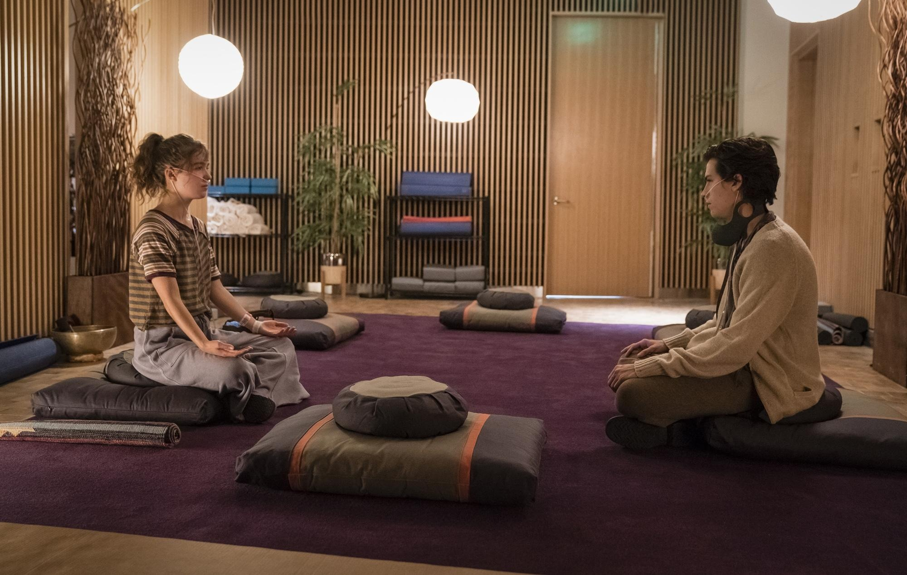
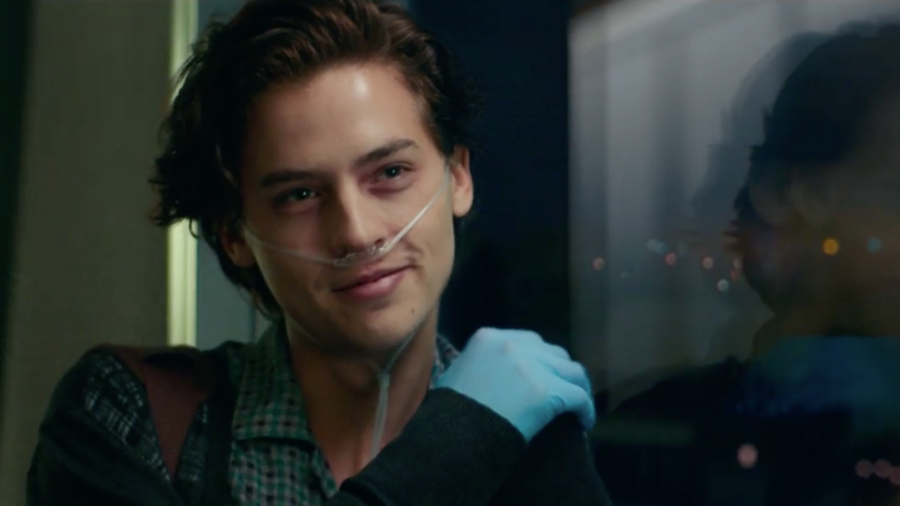
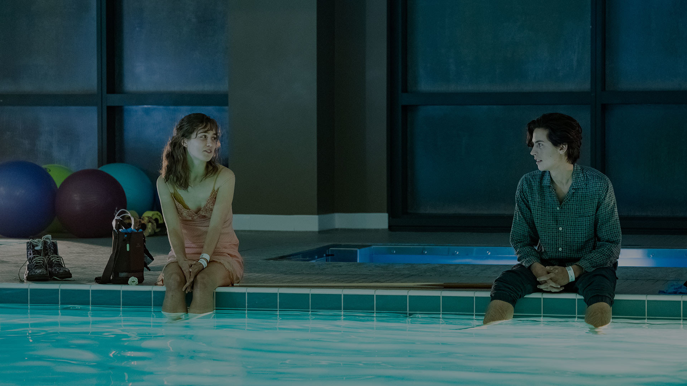
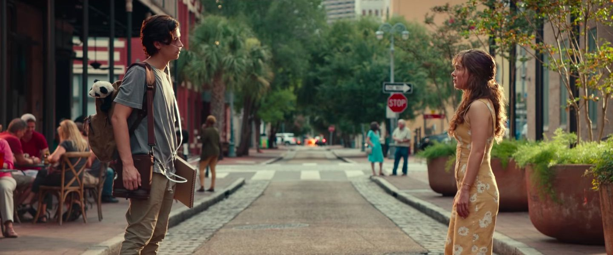

Stella Grant lived her life by the rules—because she had to.
Her lungs were fragile, her hospital room a second home, and her daily routine a ritual of survival. She had cystic fibrosis, a disease that suffocated slowly, quietly, every breath a borrowed moment. But Stella was determined. She tracked her medications religiously, organized her life down to the minute, and kept everyone she loved at arm’s length—literally and emotionally.
And then came Will Newman.
He was everything Stella wasn’t—reckless, sarcastic, and tired of trying. He had CF too, but his condition was worse. He carried a rare bacteria that made it deadly for others with the same disease to get too close to him. Will didn’t care about treatments or timetables. He’d been in and out of hospitals so often that hope had become something to scoff at.
But from the moment Stella saw him across the hallway—grinning like trouble in a hoodie—something shifted.

She rolled her eyes. He smirked. And the space between them hummed with something electric.
CF rules meant they had to stay six feet apart at all times. No touching. No kissing. No exceptions. A single breath shared could be fatal. Love, in their world, was a game of restraint. But the more time they spent together—sneaking glances, playing games, trading stories—the harder it became to pretend that distance could protect them from what was happening inside.

They were falling.
Will made Stella laugh in ways her disease had long silenced. Stella made Will care in ways he’d forgotten how to feel. She gave him lists, plans, purpose. He gave her spontaneity, warmth, and the terrifying feeling of being seen—not as a patient, but as a person.
They took walks down sterile hallways. Shared milkshakes with two straws. Created a virtual bucket list they might never finish. But the highlight was simple: just being near each other.
It was everything. And it wasn’t enough.
One night, Stella had enough of the rules. Enough of being controlled by a disease that took and took and took. She reached for something of her own.
“Screw the rules,” she whispered. “Let’s take back one foot.”
So they did.
Five feet apart.

It wasn’t everything, but it was one foot closer to feeling alive.
But life is cruel to lovers made of glass. One mistake. One breath. One wrong moment could shatter everything. And it almost did.
A walk across a frozen pond, a sudden accident, a life slipping away.
Will saved Stella. But the closeness—the contact—came at a cost.
Her lungs began to fail.
She finally got the call: new lungs, a chance at a real future. But Will, carrying the bacteria that could endanger her life post-transplant, knew what he had to do.

He left.
Not because he didn’t love her—but because he did.
He stood in front of her hospital room, heart breaking, knowing this was the only way she could live.
“I need you to get better,” he said. “Even if it means not seeing me again.”
She cried. He cried. But they didn’t kiss. They didn’t touch.
They let love be enough.

After her surgery, Stella recovered slowly. Her lungs were stronger. Her breath came easier. But her heart still ached in places medicine couldn't reach.
She opened her phone. Watched his goodbye video. And smiled.
Because even though they had to stay five feet apart, they had loved with no distance at all.

They couldn’t touch. But their hearts had already collided.